Discord連携設定
Discord Webhookの取得
Discordの「Webhook」を利用して、EqMaxの通知を送信できます。
- DiscordのWebhookは高性能な送信が可能です。
- リッチ表示なEmbed形式と、シンプルな1行表示のどちらも選択可能です。
- 発信者名やアイコンのカスタマイズ、画像送信にも対応しています。
- Discordのアプリ上から簡単に作成・編集が行えます。
- 【重要】利用上の注意点
- Webhook URLは「家の鍵」です： URLを知っている人は誰でもあなたのチャンネルに投稿可能です。他人に絶対教えないでください。
- 権限の確認： サーバー管理者に「Webhookの管理」権限が付与されているか確認してください。
- 送信頻度について： 一定時間内にあまりに大量の通知を連投すると、Discord側から一時的にブロックされる場合があります。
DiscordにWebhook登録
DiscordでのWebhook登録手順
DiscordでのWebhook登録手順
①
②
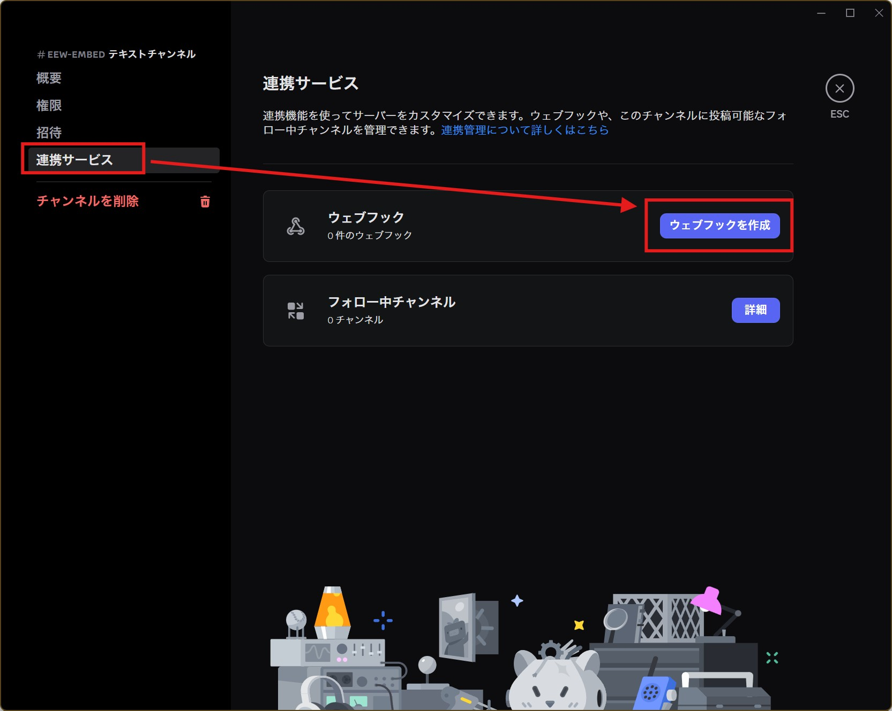
③
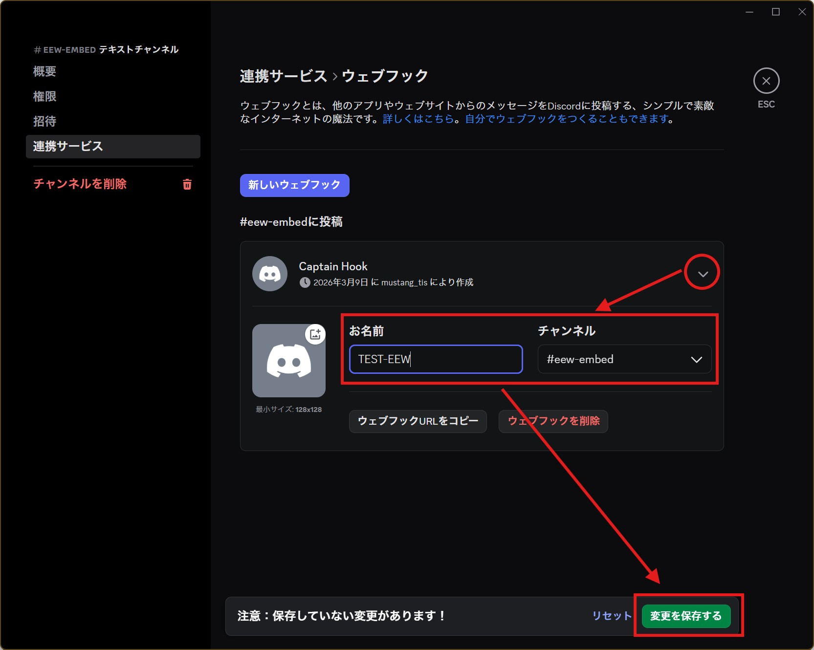
- チャンネルの「ギアマーク」をクリックします。
- 「連携サービス」から「ウェブフックを作成」を選択します。
※既存がある場合は「新しいウェブフック」をクリック - 名前を自由に設定し、通知を送りたいチャンネルを選択します。
- 「変更を保存」をクリックします。
Discord連携にDiscordのWebhookを登録

総合ハブの
Discord連携設定 (②の部分)を実行してください。 Discord連携ツールの設定
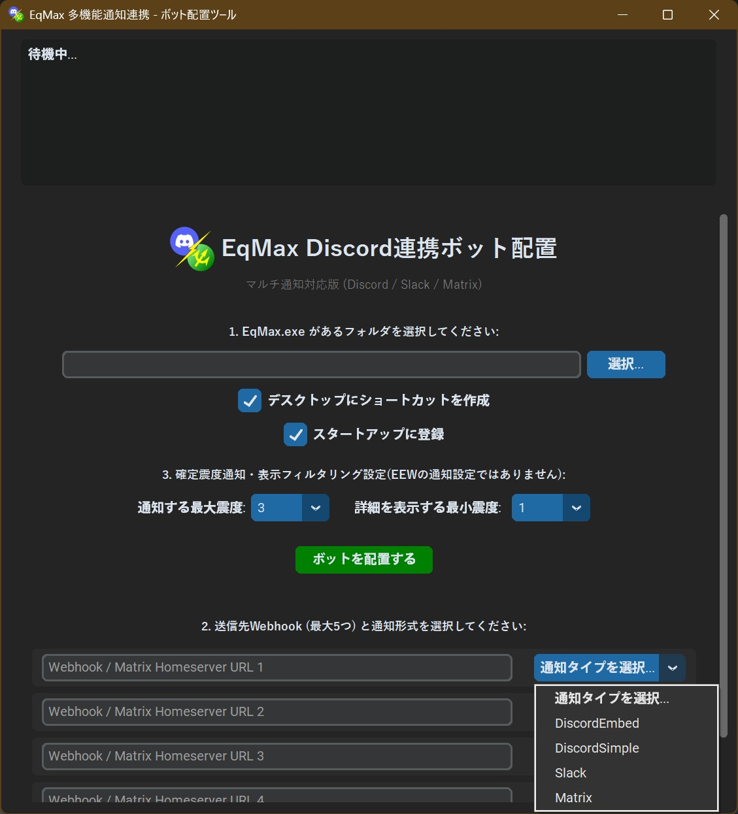
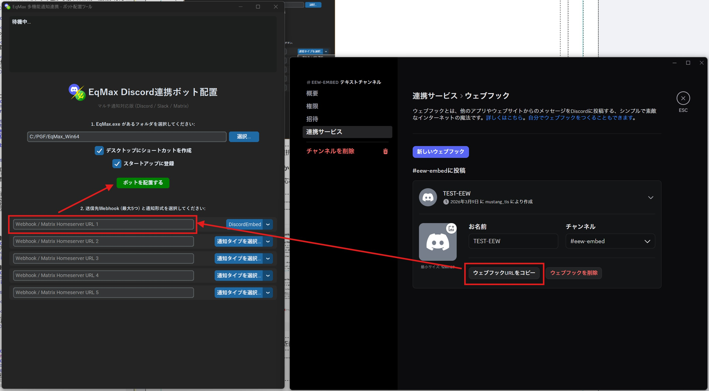
- EqMax.exeの選択: ファイルを選択します。
- ショートカット登録の部分を用途に合わせて☑する。
- 確定震度情報の投稿設定
※最大震度いくつ以上から通知か、最低震度いくつ未満から切り捨てか - 連携タイプの選択: 「DiscordEmbed」または「DiscordSimple」からお好みの形式を選びます。
- Webhook URLの入力: 先ほど取得したURLをDiscord連携側の入力欄に貼り付けます。
※入力欄はマウス右クリックまたは「Ctrl + V」で貼り付け可能です。 - ボットの作成: 「ボットを作成」をクリックし指示通り進めば連携完了です。
Discord連携を起動する
起動方法
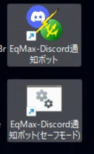
Discord起動用ショートカットは二種類あります。
- 通常起動用ショートカット: 最小化起動し、スタートアップにも登録されます。
- セーフモード起動用: 起動しない場合のトラブルシューティング用です。一度正常に起動できれば、次回からは通常起動が可能です。
※初回はセキュリティ警告を許可する必要があります。
bot実行時プロンプトの見方
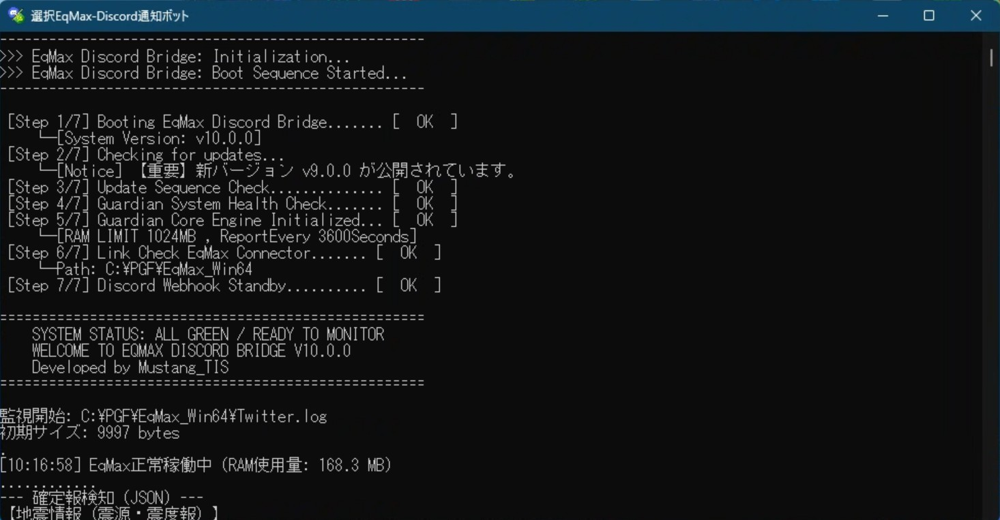
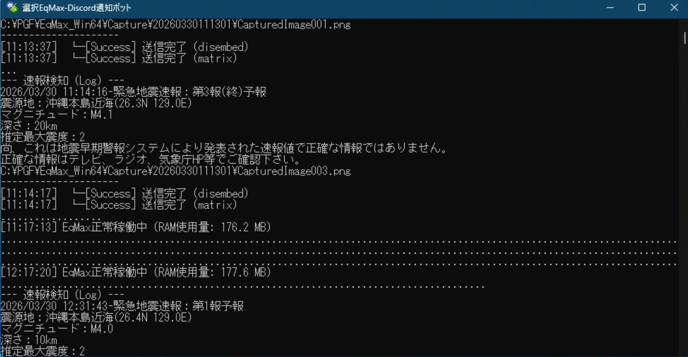
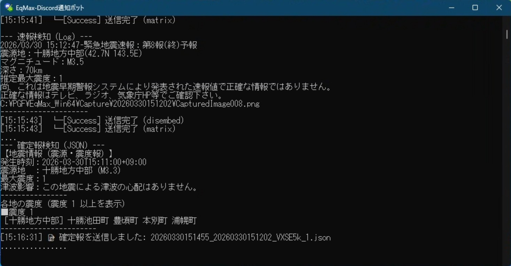
最小化中のウィンドウを展開するとアプリの情報ログが流れます。
不具合の検知とかに役立ちます。
- 初期起動プロセスアプリ起動時に読み込まれた個設定を表示します。
- 監視/Eq_Guardian: フリーズ検知・自動再起動・メモリリーク監視(1GB制限)・定期生存報告を行います。
- EEW・地震情報通知表示:各種連携システムの通知成功可否や投稿内容を表示します。
Tips：その他情報
Embed投稿とSimple投稿の違い
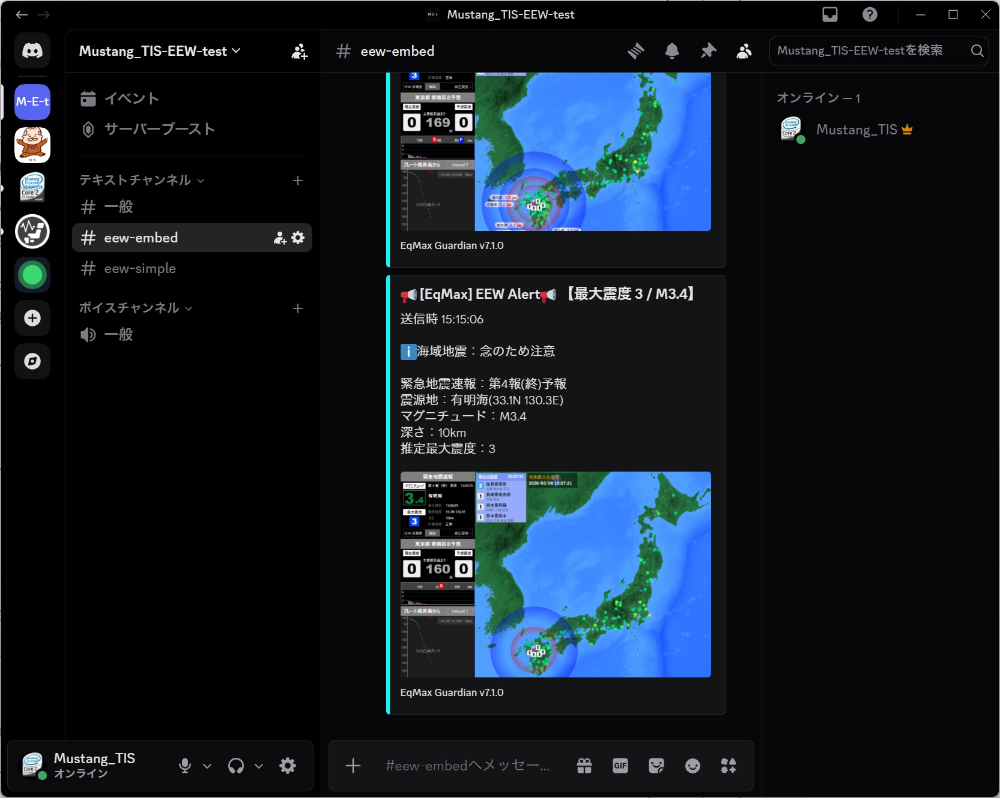
- Embedモード（リッチ表示）
- 震度や津波リスクに応じたエッジカラー表示
- ジャンル毎の改行で見やすいレイアウト
- 地図の埋め込み表示に対応
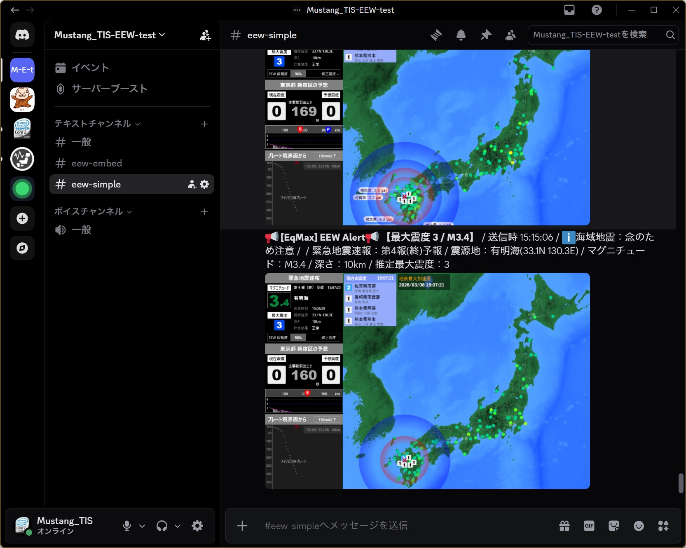
- Simpleモード（プレーンテキスト）
- エッジなしの1行表示
- 画像URLの単体取得が可能
- 外部連携サービスでのトラブル回避に有効
botのアイコンを変更する
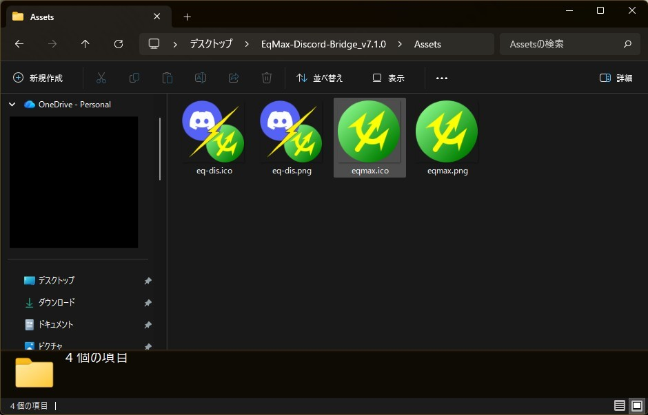
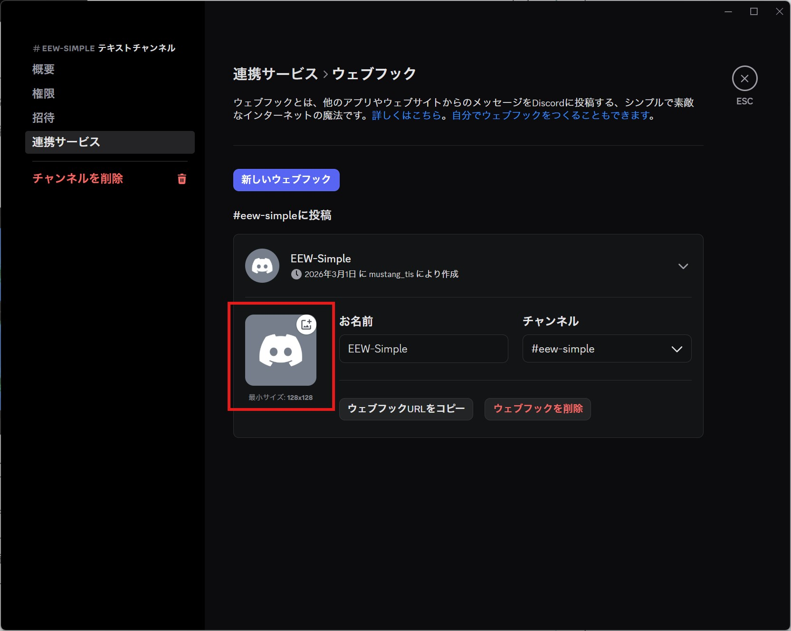
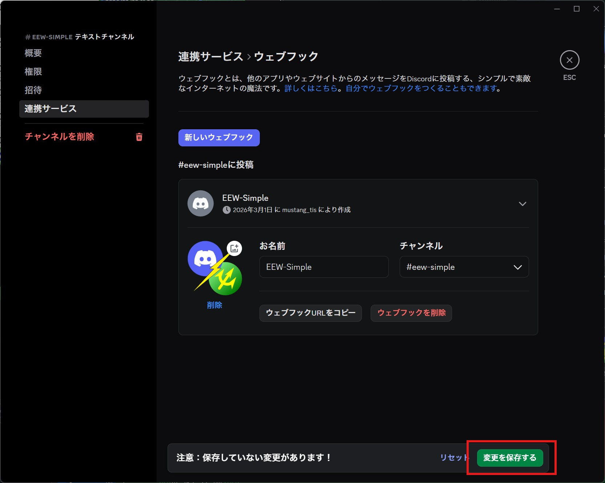
アイコン変更の手順:
Discordの設定画面にあるアイコン横のボタンから、Assetフォルダ内のPNGファイルを「選択（アップロード）」してください。
⚠️ 注意点:
この設定はWebhook単位で適用されます。同じWebhook URLを他の連携ツールと使い回している場合、その連携先のアイコンもすべて変更されてしまいます。
※EqMax Discord Bridge専用のWebhook URLを作成して運用することを強く推奨します。
Discordの設定画面にあるアイコン横のボタンから、Assetフォルダ内のPNGファイルを「選択（アップロード）」してください。
⚠️ 注意点:
この設定はWebhook単位で適用されます。同じWebhook URLを他の連携ツールと使い回している場合、その連携先のアイコンもすべて変更されてしまいます。
※EqMax Discord Bridge専用のWebhook URLを作成して運用することを強く推奨します。